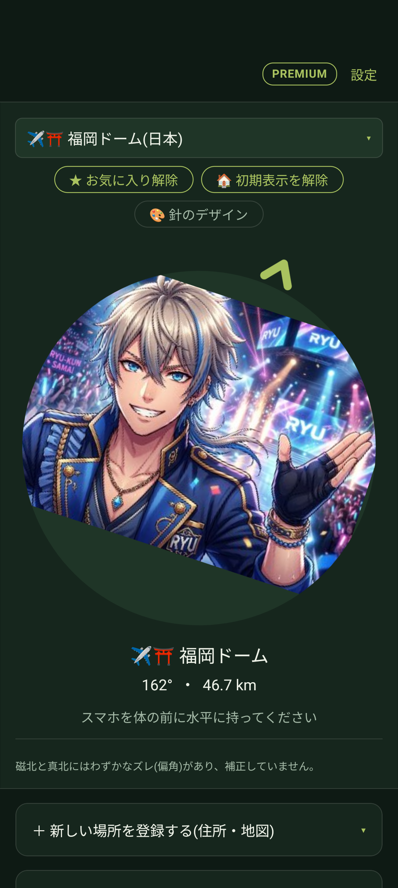
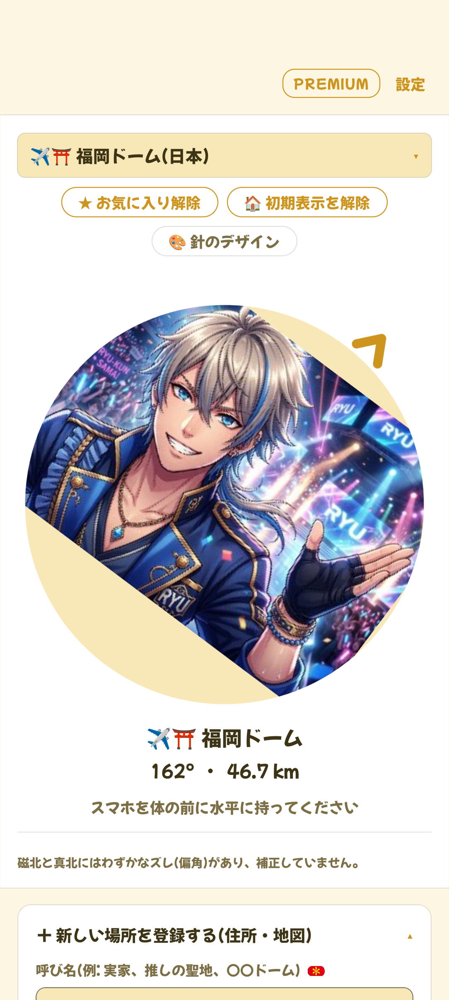
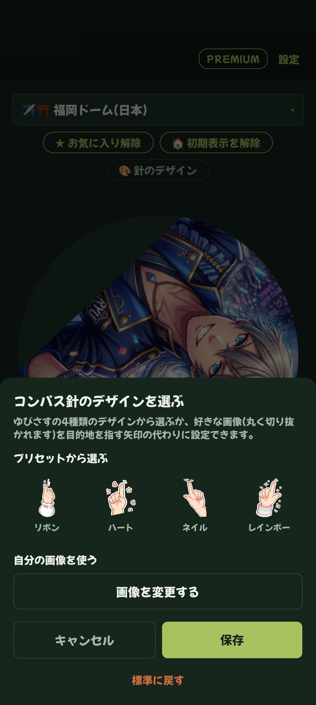
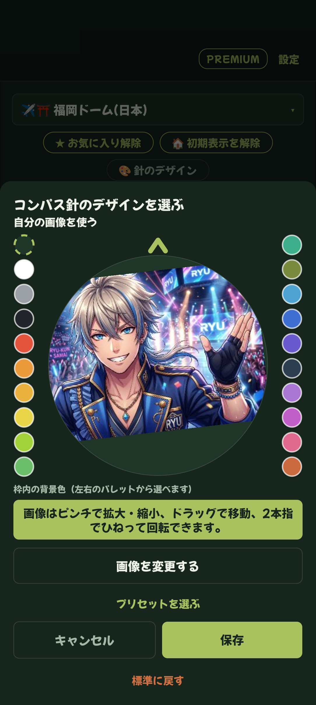

📖 はじめに（この画面でできること）
「コンパス画面」は、アプリの中心となるメイン画面です。選んだ目的地が現在地からどの方角にあるのか、何キロ離れているのかをリアルタイムに確認できます。


🧭 1. コンパス画面の見方と基本操作
コンパス画面では、目的地への方角を大きな矢印やカスタマイズした針が指し示します。
目的地の名称と方角・距離の確認
コンパス中央の下に、現在選択されている目的地（例：福岡ドーム）、北を基準とした方位角（例：162°）、現在地からの直線距離（例：46.7 km）が表示されます。
スマートフォンを水平に保つ
画面の「スマホを体の前に水平に持ってください」という案内に従い、端末を地面と平行にして体の正面に構えてください。体をゆっくり回し、コンパスの指す方向とスマホの頭が一致したとき、正面が目的地の方向になります。
目的地の切り替え
画面上部の目的地ドロップダウンをタップすると、登録されている場所やプリセット地の一覧ドロワーが開き、いつでも別の場所に切り替えることができます。
🎨 2. 針のカスタマイズ（好きな写真や手のイラスト）
ゆびさすコンパスでは、味気ない針ではなく、お気に入りの推しの写真やイラスト、かわいい手の指さしハンドに針を変更できます。


「針のデザイン」ボタンをタップ
コンパス上部にある「🎨 針のデザイン」ボタンをタップします。
イラスト針または写真の選択
あらかじめ用意された4種類の指さしハンドから選ぶか、「端末の写真から選ぶ」をタップしてスマホ内の好きな画像を選択します。
ピンチ・ドラッグ・回転で位置を合わせる
プレビュー画面で写真をピンチイン/ピンチアウトして拡大縮小、ドラッグして位置調整、2本指で回転させて「指さす方向」や「顔の向き」をぴったり合わせます。
「決定」で保存
調整が完了したら決定ボタンをタップします。設定した針画像は、その場所専用のデザインとして保存されます。
⭐ 3. お気に入り登録と起動時の初期表示設定
よく向く目的地は、ワンタップでアクセスできるように登録しておきましょう。
お気に入りに登録
「★ お気に入り登録」をタップすると、場所一覧ドロワーの最上部「お気に入り」欄に固定表示され、いつでもすぐに呼び出せるようになります（解除は「★ お気に入り解除」）。
起動時の初期表示に設定
「🏠 初期表示に設定」をタップすると、次回アプリを起動した際に、最初からその目的地が選ばれた状態でコンパスが開きます。毎日の推し活や恵方参りの期間中に大変便利です。
❓ よくある質問
はい。「針のデザイン」画面を開き、プリセットのハンドイラストや標準デザインを選択して保存することで、いつでも元に戻せます。
はい、設定したカスタム針の画像データもバックアップファイルに含まれるため、新しい端末へそのまま復元できます。